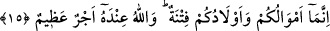
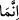

olduğuna, kalb şehrine hicret etmesine engel olduğuna işâret vardır. O halde bunların
peşinden gitmekten hep kendileriyle haşır neşir olmaktan her durumda onların
hareketleriyle ilgilenmekten kaçınmak şarttır. Yine bu çocukların sizlere binek olmaları
dolayısıyla zaman zaman işlemiş oldukları yanlış hareketlerini affetmeniz, azarlayıp
ayıplamanın ardından hoş görmeniz îmânınızın nuru kalbinizin mârifet ışıklarıyla onların
karanlıklarını örtmek sûretiyle onları bağışlamanız gerekir. Çünkü Allah Teâlâ çok
bağışlayıcıdır, lutfuyla sizlerin kusurlarını örter, sizlere üzerinize rahmetini yağdırmak
sûretiyle merhamet eder. Yüce Allah bizleri ve sizleri takvâ ehlinden ve rahmetine
erişenlerden eylesin ve bizleri çeşitli rahmetlerinin arasına gark etsin.
Kâşifî demiştir ki; “Onlardan hangisinin Allah’ın muhabbetini bir kenara bırakıp
gönlünü mal ve evlada bağladığı, hangisinin de bunları Allah yolunda bağışladığını
göstermek için imtihandır.”
15. Doğrusu mallarınız ve çocuklarınız sizin için bir imtihandır: Büyük mükâfat
ise Allah’ın yanındadır.
“Doğrusu mallarınız ve çocuklarınız sizin için bir imtihandır.” Belâ, sıkıntı ve çile
kaynağıdır. Onlar sizleri hiç ummadığınız noktadan günaha ve cezâya düşürürler.
Bu âyet-i kerimede “/innemâ” edatı hasır için gelmiştir. Çünkü bütün mallar ve
çocuklar fitnedirler. Zira mal ya da evladla ilgili bir husus mutlaka içinde fitneyi ve
kalb meşguliyetini kapsıyor demektir. Burada çocukların eşlerden sonra zikredilmesi,
aşağıdan yukarıya doğru bir terakki ve yükselme anlamınadır. Çünkü insan kalbi,
çocuklarına mallardan daha çok bağlıdır. Zira çocuklar babalarının birer parçasıdırlar.
Oysa mallar böyle değillerdir, onlar varlığın eklentisi ve uzantısıdırlar. Bu nedenle
fiillerin tevhidi çocuklardan fânî olma, vazgeçme karşılığında, zâtın tevhidi de nefisten
vazgeçme karşılığında getirilmişdir. Allah’ın sevgisini ve ona itâatı mal ve evlad
sevgisine ve çocuklarının faydaları uğruna tercih eden kimse için “Büyük mükâfat
Allah’ın yanındadır.” Yüce Allah bu âyet-i kerimede dünyanın kusurunu zikretmek
sûretiyle onları dünyadan kaçındırmakta âhiretin nimetini zikrederek oraya teşvikte
bulunmaktadır.
İbn Mesud (r.a.)’dan rivâyet olunuyor: Sizler “Yâ Rabbi! Beni fitneden koru,
demeyin. Çünkü insana fitne olmayan hiç bir mal ve çocuk yoktur. Onun için böyle
diyeceğinize: “Fitnelerin saptırıcılarından sana sığınırım ya Rabbi!” deyiniz.
Bunun benzeri Muhammed bin el Münkedir (r.h.)’dan nakledilmiştir. O şöyle anlatır:
Bir gece tavaf esnasında “ya rabbi beni koru” diye duâ ettim ve bu konuda Allah’a çok
yalvardım. O gece rüyamda sanki birisi bana şöyle diyordu; “böyle yapma.” Ben
“niçin?” diye sordum. O dediki “çünkü o kendisine isyan edilmesini istiyor ki